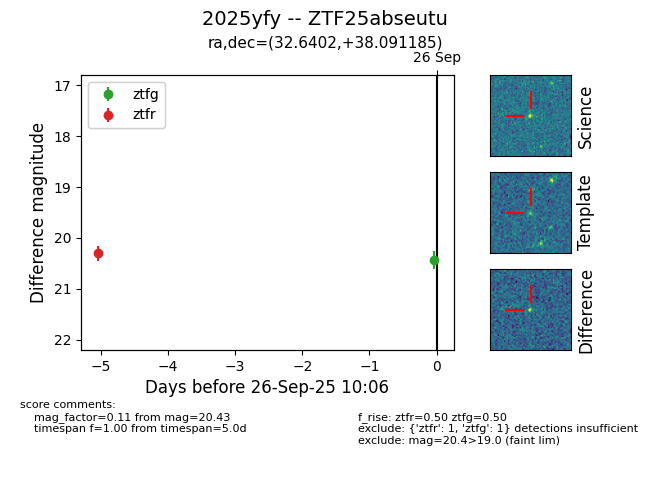

FINK: ZTF25abseutu
Lasair: ZTF25abseutu
ALeRCE: ZTF25abseutu
TNS: 2025yfy
YSE: 2025yfy
ZTF25abseutu (ztf,fink)
2025yfy (tns,yse)
equatorial (ra, dec) = (32.6402,+38.09119)
galactic (l, b) = (139.6504,-22.19835)

last ztfg=20.43, ztfr=20.30
1 ztfg, 1 ztfr detections